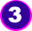
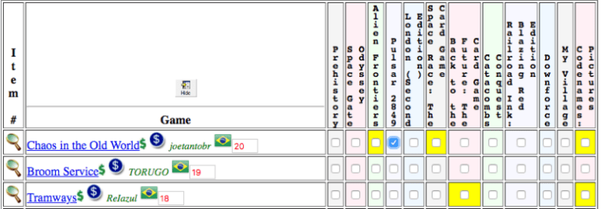
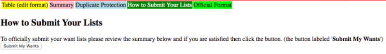

MATH TRADE é um evento voltado para troca de jogos. Uma grande oportunidade para trocar um jogo seu por um jogo de outra pessoa a partir de triangulações geradas por um algoritmo programado para maximizar a maior quantidade de trocas dentro de um grupo. A grande sacada de uma MATH TRADE é a utilização desse sistema automatizado que permite um "círculo de trocas" onde você não estará trocando jogos diretamente com uma pessoa, mas com várias.
Vamos ver um exemplo simplificado do que é feito pelo sistema:
Você não é obrigado a trocar nenhum jogo que colocou na lista durante a primeira etapa. Se não quiser trocá-lo, basta não marcar nenhum jogo para trocar com ele nas etapas seguintes.
Você só vai receber os jogos que escolheu. Não existe a possibilidade de receber algo que você não tenha marcado na etapa de escolha de jogos. Então fique extremamente atento nessa etapa.
A troca é sempre um por um, ou seja um item seu por outro item de outra pessoa. Para aumentar ovalor de um item, muitos participantes colocam vários jogos em um único item, para isso bastaescolher um dos itens como principal e descrever os demais dentrodo item. (Entenda melhor essa opção no tutorial).
PRIMEIRA ETAPA: Adicionando seus jogos na lista de trocas
00/00/2021 e 00/00/2021 00:00h BRT (UTC-3)
SEGUNDA ETAPA: Definição e envio da lista de desejos (wantlist)
00/00/2021 e 00/00/2021 00:00h BRT (UTC-3)
TERCEIRA ETAPA: Resultado Oficial após execução do algoritmo
00/00/2021 e 00/00/2021 00:00h BRT (UTC-3)
QUARTA ETAPA: Entrega dos jogos
Entenda como a entrega será realizada na seção
ENTREGA DOS JOGOS MATH-TRADE BH JULHO 2021
Você preenche a lista com os seus jogos que deseja trocar. Colocar os jogos na lista ainda não significa que você tem obrigação de trocá-los. É apenas um cadastro do que você pretende trocar. É importante cadastrar para ter visibilidade e de certa forma incentivar o cadastro.
A inclusão pode ser feita diretamente na
GeekList
na opção Add Item ou através do
OLWLG,
desde de que sua coleção esteja sincronizada com o OLWLG e
os jogos marcados como "For trade".
Essa segunda opção é apenas um facilitador e recomendada
apenas para quem já tem experiência com o sistema da MT
e
com o BGG.
Ao incluir um jogo na geeklist o OLWLG não sincroniza automaticamente, é preciso que o responsável da MT faça a sincronização manualmente.
Na inclusão do jogo é super importante descrever
completamente
as características e a condição do jogo.
As características básicas são:
a edição, versão, o idioma, se
tem sleeves, se possuim os inserts originais (muito
importante
informar se tiverem sido descartados), inserts customizados,
unpunched, lacrado, expansões, tokens 3D, minis pintadas.
As condições são: quinas
esbranquiçadas, faltando algum componente, split corner,
mofo e
qualquer outra informação do tipo.
Se você pretende incluir um conjunto/combo de jogos como um item único, é necessário que escolha a opção "outside the scope of BGG" e inclua a tag +altname+ descrição curta -altname-.
Exemplo: +altname+ Pacote de 2 Jogos
-altname-
Esse item inclui os jogos X e Y.
Jogo X
Edição:
Idioma:
Condições do jogo:
Jogo Y
Edição:
Idioma:
Condições do jogo:
Como mencionado nas regras, NUNCA EXCLUA UM JOGO DA LISTA. Veja abaixo um video explicandoo que você deve fazer caso desiste de trocar algum item que você tenha adicionado
É o momento de selecionar os jogos que deseja e marcar por qual da sua lista você aceita trocar. A segunda fase da MT é a fase de escolha dos jogos que você deseja e a marcação dos jogos que aceita trocar pelos seus jogos. Os jogos selecionados nessa lista são os jogos que pretende receber. Não necessariamente todos os seus jogos serão trocados vai depender da escolha dos outros participantes e do algoritmo da Math Trade.
Exemplo:
Você havia adicionado os jogos A, B e C para troca. E agora
selecionará o jogo X, Y, W e Z que deseja receber
Para o seu jogo A você marcará que aceita receber os jogos X
e Y
Para o seu jogo B nenhum foi compatível para você, logo você
não marca nenhuma opção e ele não será trocado
Para o seu jogo C você marcará que aceita receber os jogos
Y, W e Z
Essa etapa tem 3 fases e todas essas fases são feitas no OLWLG.
Nessa etapa você escolhe os jogos que pretende receber. Para isso, é preciso ir na lista dos jogos sincronizados, identificados pela imagem

E clicar na imagem para cada jogo que deseja incluir na lista dos jogos que pretende receber.
Nessa etapa você escolhe os jogos que pretende trocar
pelos seus. Os números em vermelho só ajudam
para ordenar a lista dos jogos. Para isso é preciso ir
na lista dos jogos selecionados para troca
pela imagem abaixo.

Após marcar todos os quadradinhos referente as suas
escolhas, é necessário confirmar essa escolha
confirmando a mesma. Para isso é preciso clicar no botão
verde How to Submit Your List e depois
clicar no botão Submit My Wants.

O sistema calcula as trocas e define o resultado. Após esse
resultado é
obrigatório
o envio dos jogos.
Exemplo: O resultado indica que vc vai receber o jogo X
de Maria e enviar o jogo A para João.
Como funciona o sistema que gera o resultado da Math
Trade?
O OLWLG gera um arquivo de entrada para o TradeMaximizer,
que é o sistema que gera o resultado da MT. O TradeMaximizer
tem como objetivo encontrar o resultado que possui a maior
quantidade de trocas, podendo gerar vários círculos de
trocas.
O resultado é apresentado da seguinte forma, onde cada linha do “gives” indica para que você deve enviar o jogo e a para cada linha do “receives” indica o jogo e de quem você vai receber:
Exemplo:
— 1. gives “Catacombs Conquest (5)” to ftola (324)
— 2. gives “Pulsar 2849 (8)” to joaoclaudio (119)
— 3. gives “My Village (6)” to pedrocaetano (277)
— 4. gives “Codenames: Pictures (70)” to TORUGO (21)
— 5. gives “London (Second Edition) (238)” to TORUGO (14)
++ 1. receives “7 Wonders Duel (212)” from cahnove
++ 2. receives “Chaos in the Old World (96)” from joetantobr
++ 3. receives “Carcassonne: Safari (320)” from fabioosmar
++ 4. receives “Kingdomino (118)” from ergli
++ 5. receives “Duel of Ages II (105)” from nmiguel
Repare que você poderá receber e entregar jogos para várias
pessoas, uma vez que o algoritmo calcula trocas indiretas.
E esse resultado é obrigatório o envio, pois foi uma
escolha sua!
Criar texto